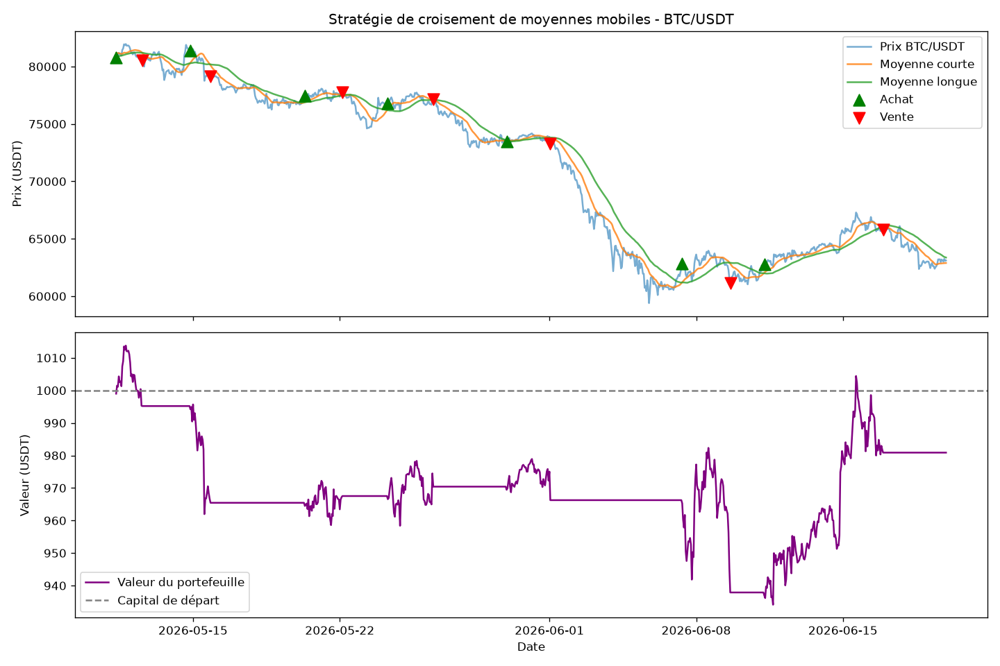

⚠️ Ceci est un projet pédagogique. Les performances passées (backtest) ne
garantissent aucunement des résultats futurs. Aucun contenu de cette page ne
constitue un conseil financier.
📊 Détail des trades
Tableau complet de chaque trade simulé, avec profit/perte coloré.
→ Voir le tableau📂 Code source
Tous les scripts Python du projet (fetch, stratégie, backtest, analyse).
→ Voir sur GitHubComment ça fonctionne
Le bot suit une stratégie de croisement de moyennes mobiles : il achète quand une moyenne courte dépasse une moyenne longue (signal de tendance haussière), et vend dans le cas inverse. Le projet inclut :
fetch_data.py— récupération des données historiques (Binance)strategy.py— logique de signal, avec filtre de tendance optionnelbacktest.py— simulation complète avec stop-loss / take-profitgrid_search.py— test automatique de combinaisons de paramètresmulti_period_analysis.py— robustesse sur plusieurs périodes de marché
Résultats du dernier backtest
